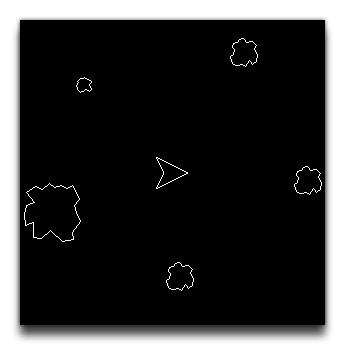
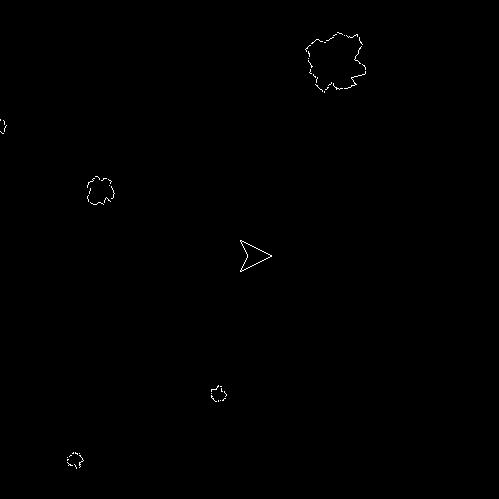

Currently, the asteroid object does nothing. It has a single sprite and doesn't move, so we need to fix that and make things more interesting!
We are going to add some code into the object "obj_asteroid" Create Event. Unlike the Step Event, this event is only triggered once, when an instance of the object is created, and because of this it's an ideal place to initialise variables and run any functions that you want when creating the instance.
We want our asteroids to be different from each other when they're created, and so we'll set the instance variable sprite_index to use a random sprite from our resource tree. The sprite_index is the variable that holds the assigned sprite ID value, or "index", and so we can change it at any time to change the sprite the object will draw. We'll also use the choose() function, to randomly pick from one of the three sprites we previously created.
So, open up "obj_asteroid" and add a Create Event to the Event Editor. This will open a code editor where we'll add the following:
sprite_index = choose(spr_asteroid_small, spr_asteroid_med, spr_asteroid_huge);
If you test the game again you'll get something like the following:

We need to set the asteroid moving in a direction now, and we want that direction to be random. We briefly mentioned the direction built-in variable earlier, and we'll use it now, like this, after the code to choose the sprite_index:
direction = irandom_range(0, 359);
Now, direction is not the same as the image_angle, since one is the direction of movement, and the other is the angle a sprite will be drawn at, so we might as well change the image_angle to a random value too, as that will increase the visual variety:
image_angle = irandom_range(0, 359);
In both lines of code we are using the function irandom_range(), which will return a random integer value between 0 and 359 inclusive.
Finally in this event, we need to set the speed of the instance, so add this line of code:
speed = 1;
So now the asteroids will move 1px per step in a random direction and be drawn at a random angle. But before we test, there is one final thing we need to do, and that's add the wrapping code we used on our player ship object to also wrap the asteroids, otherwise when they leave the room they'll be lost forever!
Add a Step Event into the "obj_asteroid" and copy/paste the move_wrap() code from the player ship object:
move_wrap(true, true, sprite_width / 2);
We'll also make the asteroids spin a little as they move, again to add more visual interest to the game. For that, you'd add this into the Step Event
image_angle = image_angle + 1;
Test the game again now and you will see that the asteroids now move, spin and wrap around the room!

Click the "Next" button to continue on to the section about Attacking and Collisions...